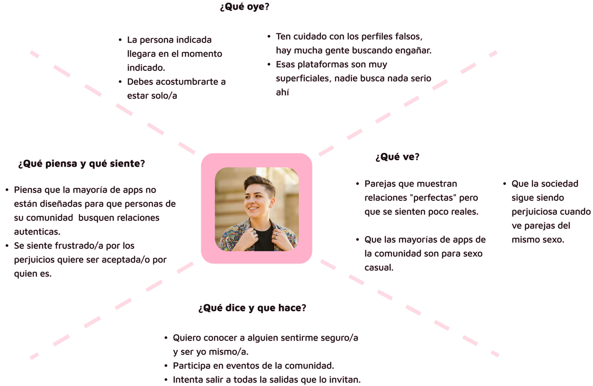
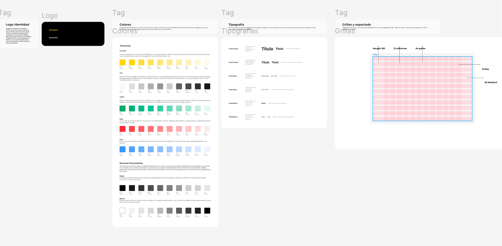
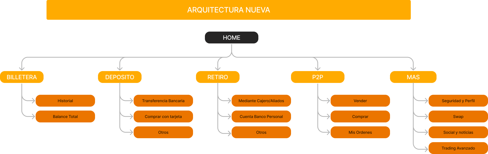
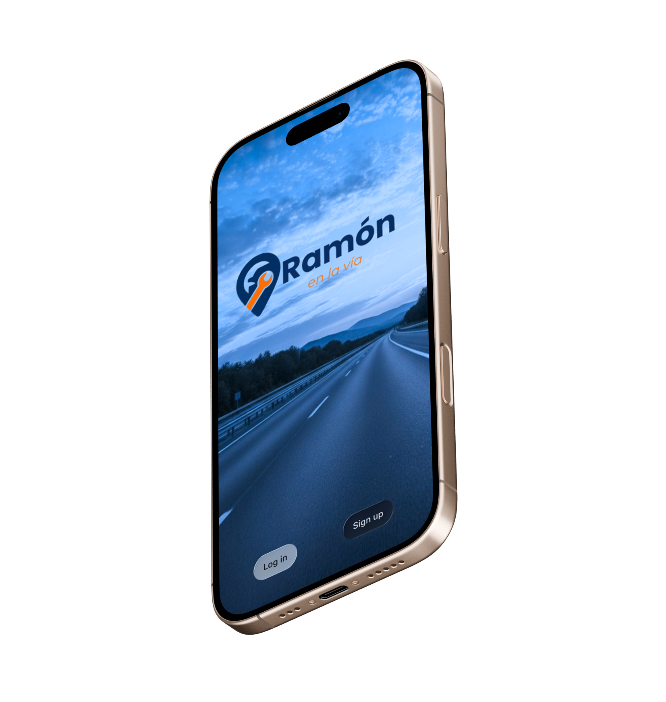

Servicios de Diseño UX/UI & Estrategia Digital
Servicios profesionales orientados a crear productos digitales intuitivos, accesibles y escalables.
Identifico las necesidades y dolores reales de los usuarios. No me baso en suposiciones, sino en datos reales. Llevo a cabo investigaciones cualitativas y cuantitativas mediante entrevistas, pruebas de usabilidad e itinerarios de navegación.

Construyo interfaces visuales atractivas, accesibles y perfectamente estructuradas. Utilizo Figma para crear Sistemas de Diseño (Design Systems) basados en componentes reutilizables, variantes y variables.

Diseño la estructura lógica e invisible sobre la cual se sostiene todo producto digital. Organizo y jerarquizo la información mediante técnicas como el Card Sorting y el Tree Testing para construir mapas de sitio claros.

Entiendo el diseño como una herramienta al servicio del negocio y no solo como un ejercicio estético. Conecto las necesidades de los usuarios con los objetivos comerciales de la empresa para definir funcionalidades con alto impacto.
